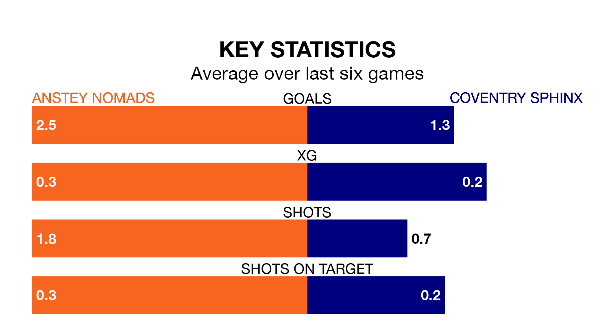

Relegation candidates Coventry Sphinx face a challenge away against high-flying Anstey Nomads on Saturday.
Coventry Sphinx are 17th in the Northern Premier League Division One – Midlands table, and have picked up six wins and 12 draws in their 33 games to date.
Anstey Nomads, meanwhile, are third in the standings with 68 points, having won 20 and drawn eight of their first 30 matches, and are nine points behind table-toppers Spalding United.
With 71 goals in 30 games so far this season, Anstey Nomads are the league's second-highest scorers with 2.4 goals per game. And they are conceding fewer than average, letting in 31 goals at a rate of 1.0 per game.
Coventry Sphinx, meanwhile, are below average scorers, with 1.0 goal per game, compared to a league average of 1.6. They have conceded 1.7 goals per game.
The hosts are in fantastic form in the Northern Premier League Division One Midlands, with five wins and one loss from their last six games.
With a win and two draws over that period, the away side's form is much worse – they have taken five points from 18, compared to Anstey Nomads's 15.
Anstey Nomads's last match was on April 6, a 3-0 win against AFC Rushden and Diamonds.
Coventry Sphinx lost 2-1 against Walsall Wood last time out, also on April 6.
Updated: 11:20 (UTC), 09/04/24